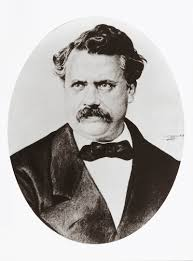
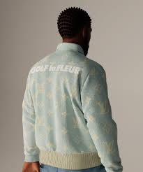
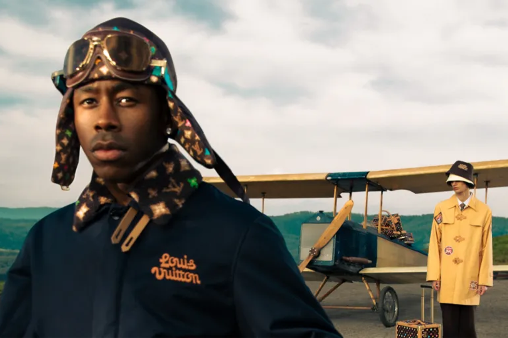
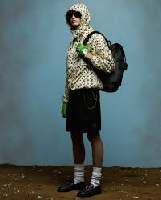

Nuestra historia
Louis Vuitton es una de las marcas de lujo más icónicas y prestigiosas del mundo, conocida por su excelencia
en la artesanía y su distintivo monograma. La historia de Louis Vuitton comenzó en el siglo XIX, cuando Louis
Vuitton nació el 4 de agosto de 1821 en Anchay, un pequeño pueblo en la región de Jura, Francia. A los 16 años,
Vuitton se trasladó a París y comenzó a trabajar como aprendiz de fabricante de baúles y embalador, donde adquirió
habilidades fundamentales en el diseño y fabricación de equipaje.

Vision
La visión de Louis Vuitton se centra en mantener y fortalecer su posición como líder mundial en el sector
del lujo, adaptándose y evolucionando con las tendencias y demandas del mercado global. Comprometido con
la excelencia en artesanía y calidad, cada producto de Louis Vuitton es diseñado y fabricado con atención
meticulosa al detalle, garantizando durabilidad y prestigio.La marca busca innovar constantemente en sus
diseños y procesos, introduciendo nuevos productos y colaborando con artistas contemporáneos para mantener
su relevancia y atractivo.Con la ambición de expandir su presencia global, Louis Vuitton abre nuevas
tiendas y adapta estrategias de marketing.

Mision
La misión de Louis Vuitton es crear productos de lujo que combinan calidad excepcional, innovación y diseño
icónico, mientras promueven la artesanía y la creatividad. La marca se dedica a ofrecer experiencias únicas
y memorables a sus clientes a través de una atención personalizada y un servicio superior. Además,
Louis Vuitton se compromete a operar de manera sostenible y responsable, respetando el medio ambiente y
contribuyendo positivamente a las comunidades en las que opera.En resumen, la misión de Louis Vuitton es l
iderar el sector del lujo con integridad, inspirar a sus clientes y preservar su legado de excelencia y
sofisticación.

Valores
Louis Vuitton, una reconocida marca de moda de lujo, se guía por un conjunto de valores
fundamentales que moldean su identidad y operaciones. Estos valores incluyen un compromiso
con la creatividad y la innovación, lo que impulsa a la marca a explorar constantemente nuevos
límites de diseño e integrar técnicas de vanguardia en sus colecciones. La excelencia y la
artesanía son primordiales, con cada producto meticulosamente elaborado a partir de los mejores
materiales y utilizando técnicas tradicionales para garantizar una calidad y durabilidad
excepcionales.La marca también valora profundamente su rica herencia y tradición, incorporando
elementos icónicos como el lienzo monogramado.
